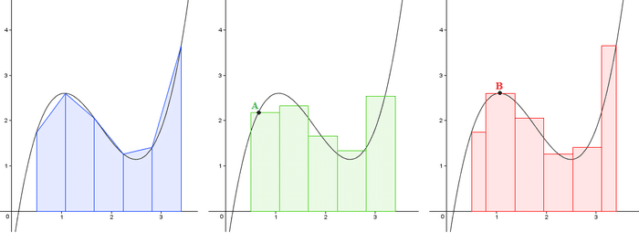

Autores: Juan Pablo Arroyo Godoy (carnet 9941-24-23374) & Geovany Alejandro Ajin Pérez (carnet 9941-24-____)
¡Te damos la bienvenida a este recorrido por el Cálculo Integral! En esta página exploraremos a fondo, de forma clara y visual, el concepto del Área bajo la curva.
Esta no es solo una idea abstracta; es una de las aplicaciones fundamentales y más poderosas del Cálculo Integral, sirviendo como puente entre la geometría (el cálculo de áreas) y el análisis matemático (la integración).
Navega a través de las diferentes secciones para descubrir su definición formal, el método exacto para calcularla (usando el Teorema Fundamental del Cálculo), ejemplos prácticos y las múltiples aplicaciones que tiene en campos tan diversos como la física, la economía y la estadística.
Matemáticamente, el área bajo la curva de una función continua y no negativa f(x), en un intervalo cerrado [a, b], se define formalmente como la integral definida de esa función entre dichos límites.
Esta integral representa conceptualmente la suma de las áreas de infinitos rectángulos de altura f(x) y de base infinitesimalmente pequeña (dx), abarcando todo el intervalo desde x=a hasta x=b. Es el resultado límite de lo que se conoce como la Suma de Riemann.
A = ∫ab f(x) dx
A continuación se presentan videos con diferentes ejemplos del cálculo del área bajo la curva:
Explora estas herramientas interactivas para graficar funciones y calcular integrales definidas (área bajo la curva):
Área Aproximada: ---